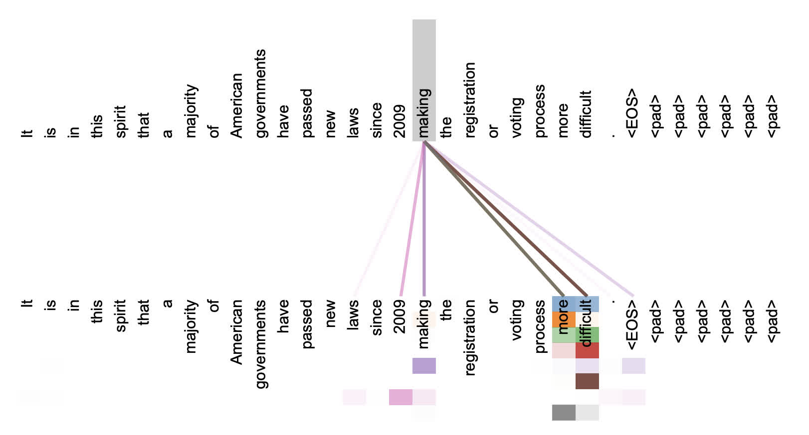
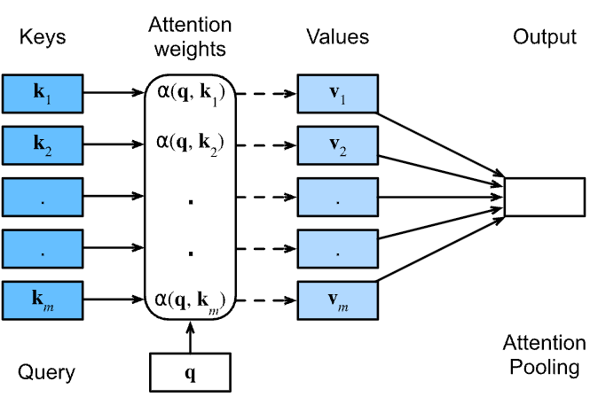
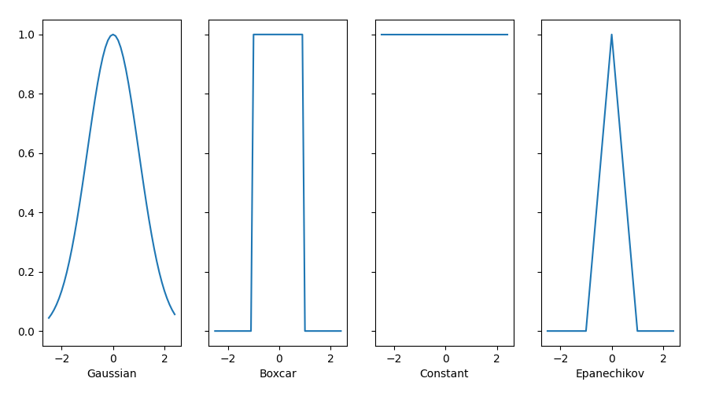

5.1 Attention Mechanism
An attention mechanism is a machine learning technique that directs deep learning models to prioritize (or attend to) the most relevant parts of input data.Innovation in attention mechanisms enabled the transformer architecture that yielded the modern large language models (LLMs) that power popular applications like ChatGPT.
Created Date: 2025-05-19
As their name suggests, attention mechanisms are inspired by the ability of humans (and other animals) to selectively pay more attention to salient details and ignore details that are less important in the moment. Having access to all information but focusing on only the most relevant information helps to ensure that no meaningful details are lost while enabling efficient use of limited memory and time.
Mathematically speaking, an attention mechanism computes attention weights that reflect the relative importance of each part of an input sequence to the task at hand. It then applies those attention weights to increase (or decrease) the influence of each part of the input, in accordance with its respective importance. An attention model - that is, an artificial intelligence model that employs an attention mechanism — is trained to assign accurate attention weights through supervised learning or self-supervised learning on a large dataset of examples.
An example of the attention mechanism following long-distance dependencies in the encoder self-attention in layer 5 of 6. Many of the attention heads attend to a distant dependency of the verb 'making', completing the phrase 'making...more difficult'. Attentions here shown only for the word 'making'. Different colors represent different heads. Best viewed in color.

Attention mechanisms were originally introduced by Bahdanau et al in 2014 as a technique to address the shortcomings of what were then state-of-the-art recurrent neural network (RNN) models used for machine translation. Subsequent research integrated attention mechanisms into the convolutional neural networks (CNNs) used for tasks such as image captioning and visual question answering.
In 2017, the seminal paper Attention is All You Need introduced the transformer model, which eschews recurrence and convolutions altogether in favor of only attention layers and standard feedforward layers. The transformer architecture has since become the backbone of the cutting-edge models powering the ongoing era of generative AI.
While attention mechanisms are primarily associated with LLMs used for natural language processing (NLP) tasks, such as summarization, question answering, text generation and sentiment analysis, attention-based models are also used widely in other domains. Leading diffusion models used for image generation often incorporate an attention mechanism. In the field of computer vision, vision transformers (ViTs) have achieved superior results on tasks including object detection, image segmentation and visual question answering.
5.1.1 Queries, Keys, and Values
So far all the networks we have reviewed crucially relied on the input being of a well-defined size. For instance, the images in ImageNet are of size \(224 \times 224\) pixels and CNNs are specifically tuned to this size. Even in natural language processing the input size for RNNs is well defined and fixed.
Variable size is addressed by sequentially processing one token at a time, or by specially designed convolution kernels. This approach can lead to significant problems when the input is truly of varying size with varying information content. In particular, for long sequences it becomes quite difficult to keep track of everything that has already been generated or even viewed by the network.
Compare this to databases. In their simplest form they are collections of keys (\(k\)) and value (\(v\)). For instance, our database \(D\) might consist of tuples {("Zhang", "Aston"), ("Lipton", "Zachary"), ("Li", "Mu"), ("Smola", "Alex"), ("Hu", "Rachel"), ("Werness", "Brent")} with the last name being the key and the first name being the value.
We can operate on \(D\), for instance with the exact query for "Li" which would return the value "Mu". If ("Li", "Mu") was not a record in \(D\), there would be no valid answer. If we also allowed for approximate matches, we would retrieve ("Lipton", "Zachary") instead.
This quite simple and trivial example nonetheless teaches us a number of useful things:
We can design queries \(q\) that operate on \((k, v)\) pairs in such a manner as to be valid regardless of the database size.
The same query can receive different answers, according to the contents of the database.
The "code" being executed for operating on a large state space (the database) can be quite simple (e.g., exact match, approximate match, top-k).
There is no need to compress or simplify the database to make the operations effective.
Clearly we would not have introduced a simple database here if it wasn't for the purpose of explaining deep learning. Indeed, this leads to one of the most exciting concepts introduced in deep learning in the past decade: the attention mechanism.
We will cover the specifics of its application to machine translation later. For now, simply consider the following: denote by \(D = {(k_1, v_1), \cdots, (k_m, v_m)}\) a database of \(m\) tuples of keys and values. Moreover, denote by \(q\) a query. Then we can define the attention over \(D\) as:
where \(\alpha(q, k_i) \in \mathbb{R} (i = 1, \cdots , m)\) are scalar attention weights. The operation itself is typically referred to as attention pooling. The name attention derives from the fact that the operation pays particular attention to the terms for which the weight \(\alpha\) is significant (i.e., large).
As such, the attention over \(D\) generates a linear combination of values contained in the database. In fact, this contains the above example as a special case where all but one weight is zero. We have a number of special cases:
The weights \(\alpha(q, k_i)\) are nonnegative. In this case the output of the attention mechanism is contained in the convex cone spanned by the values \(v_i\).
The weights \(\alpha(q, k_i)\) form a convex combination, i.e. \(\sum_i \alpha(q, k_i) = 1\) and \(\alpha(q, k_i) \ge 0\) for all \(i\). This is the most common setting in deep learning.
Exactly one of the weights \(\alpha(q, k_i)\) is 1, while all others are 0. This is akin to a traditional database query.
All weights are equal, i.e. \(\alpha(q, k_i) = \frac{1}{m}\) for all \(i\). This amounts to averaging across the entire database, also called average pooling in deep learning.
A common strategy for ensuring that the weights sum up to 1 is to normalize them via:
In particular, to ensure that the weights are also nonnegative, one can resort to exponentiation. This means that we can now pick any function \(\alpha(q, k)\) and then apply the softmax operation used for multinomial models to it via:
This operation is readily available in all deep learning frameworks. It is differentiable and its gradient never vanishes, all of which are desirable properties in a model. Note though, the attention mechanism introduced above is not the only option.
For instance, we can design a non-differentiable attention model that can be trained using reinforcement learning methods. As one would expect, training such a model is quite complex. Consequently the bulk of modern attention research follows the framework outlined in below figure. We thus focus our exposition on this family of differentiable mechanisms.

5.1.2 Attention Pooling
Now that we have introduced the primary components of the attention mechanism, let’s use them in a rather classical setting, namely regression and classification via kernel density estimation.
This detour simply provides additional background: it is entirely optional and can be skipped if needed. At their core, Nadaraya–Watson estimators rely on some similarity kernel \(\alpha(q, k)\) relating queries \(q\) to keys \(k\). Some common kernels are:
\(\alpha(q, k) = exp(-\frac{1}{2} {\left| q - k \right|}^2)\)
\(\alpha(q, k) = 1 if \left| q - k \right| \le 1\)
\(\alpha(q, k) = max(0, 1 - \left| q - k \right|)\)
There are many more choices that we could pick. All of the kernels are heuristic and can be tuned. For instance, we can adjust the width, not only on a global basis but even on a per-coordinate basis. Regardless, all of them lead to the following equation for regression and classification alike:
In the case of a (scalar) regression with observations \(x_i, y_i\) for features and labels respectively, \(v_i = y_i\) are scalars, \(k_i = x_i\) are vectors, and the query \(q\) denotes the new location where \(f\) should be evaluated. In the case of (multiclass) classification, we use one-hot-encoding of \(y_i\) to obtain \(v_i\). One of the convenient properties of this estimator is that it requires no training.
All the kernels \(\alpha (k, q)\) defined in this section are translation and rotation invariant; that is, if we shift and rotate \(k\) and \(q\) in the same manner, the value of \(\alpha\) remains unchanged. For simplicity we thus pick scalar arguments \(k, q \in \mathbb{R}\) and pick the key \(k = 0\) as the origin. This yields:
